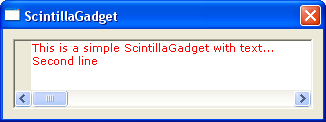

ScintillaGadget()
语法
Result = ScintillaGadget(#Gadget, x, y, Width, Height, @Callback())概要
Creates a new scintilla editing control in the current GadgetList. InitScintilla() has to be called successfully before using this command.
参数
#Gadget A number to identify the new gadget. #PB_Any can be used to auto-generate this number. x, y, Width, Height The position and dimensions of the new gadget. @Callback() The address of a procedure to receive events from the control. It must be defined as follows, where 'Gadget' is the gadget number of the control and *scinotify points to a structure with information on the event: Procedure ScintillaCallBack(Gadget, *scinotify.SCNotification) ; You code here EndProcedure
返回值
Nonzero on success, zero otherwise. If #PB_Any was used as the #Gadget parameter then the return-value is the auto-generated gadget number on success.
备注
The following events are supported through EventType():#PB_EventType_RightClickAfter creation, Scintilla specific commands may be sent to the control with the ScintillaSendMessage() command. In addition common gadget commands like ResizeGadget() or HideGadget() may be used with the control as well.
示例
Procedure MakeScintillaText(text.s) Static sciText.s CompilerIf #PB_Compiler_Unicode sciText = Space(StringByteLength(text, #PB_UTF8)) PokeS(@sciText, text, -1, #PB_UTF8) CompilerElse sciText = text CompilerEndIf ProcedureReturn @sciText EndProcedure If OpenWindow(0, 0, 0, 320, 90, "ScintillaGadget", #PB_Window_SystemMenu | #PB_Window_ScreenCentered) If InitScintilla() ScintillaGadget(0, 10, 10, 300, 70, 0) ; Output set to red color ScintillaSendMessage(0, #SCI_STYLESETFORE, 0, RGB(255, 0, 0)) ; Set the initial text to the ScintillaGadget ScintillaSendMessage(0, #SCI_SETTEXT, 0, MakeScintillaText("This is a simple ScintillaGadget with text...")) ; Adding a second line of text with linebreak before Text$ = Chr(10) + "Second line" ScintillaSendMessage(0, #SCI_APPENDTEXT, Len(Text$), MakeScintillaText(Text$)) EndIf Repeat : Until WaitWindowEvent() = #PB_Event_CloseWindow EndIf
已支持操作系统
所有